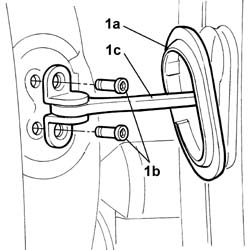
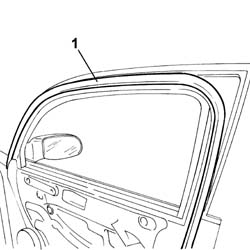

7005A42 Front side door SEAL, left or right - R.R.
- Path
- Procedures > 70 FITTINGS > 7005 passenger compartment front side doors > 7005A FRONT DOOR ASSEMBLY > 7005A42 Front side door SEAL, left or right - R.R.
- Kind
- repair procedure (removal / refitting; the operation number is the code)
- Applies to
- all engines; all production periods
- Interactive page
- https://sloeber94.github.io/elrnDB-lThss/en/#/109018
Applies to: all engines; all production periods
 Removing
Removing
 Refitting
Refitting- Disconnect the negative battery terminal.
See in Op. 7005E18 Front side door armrest - R.R.
See in Op. 7005E08 Front side door INTERIOR PANEL - R.R.
See in Op. 7005E42 Front side door frame MOUDLING - R.R.
1. Release the rubber protection (1a), undo the bolts (1b) and detach the door check strap (1c), door pillar side.

Applies to: all engines; all production periods
1. Release and remove the seal following the procedure described below.
- Use a bodywork drier which produces hot air at between 35 and 40°C.
- Point the air towards one of the two ends for 10-15 seconds from a distance of around 20-30 cm.
- Remove about 5-10 cm of the end avoiding rapid movements or angles that could cause breakages.
- Lift up the end removed previously and point the hot air between the adhesive and the paintwork from around 20-30 cm away for 15-20 seconds, then start pulling the seal towards you continuing to heat it using the drier to facilitate its removal and reduce the presence of any residues of adhesive or foam.

Applies to: all engines; all production periods
Refitting
Removing- Clean the door surround using paper soaked in heptane starting from the top centre line of the door working downwards in a clockwise direction and from the top centre line working downwards in an anti-clockwise direction until the door surround is completed.
- Check that the new seal is intact and not torn.
- Position the new seal, taking care to ensure that it adheres to the door frame and start fitting it from the join in the lower part of the window housing.
See in Op. 7005E42 Front side door frame MOUDLING - R.R.
See in Op. 7005E08 Front side door INTERIOR PANEL - R.R.
See in Op. 7005E18 Front side door armrest - R.R.
- Connect the negative battery terminal.